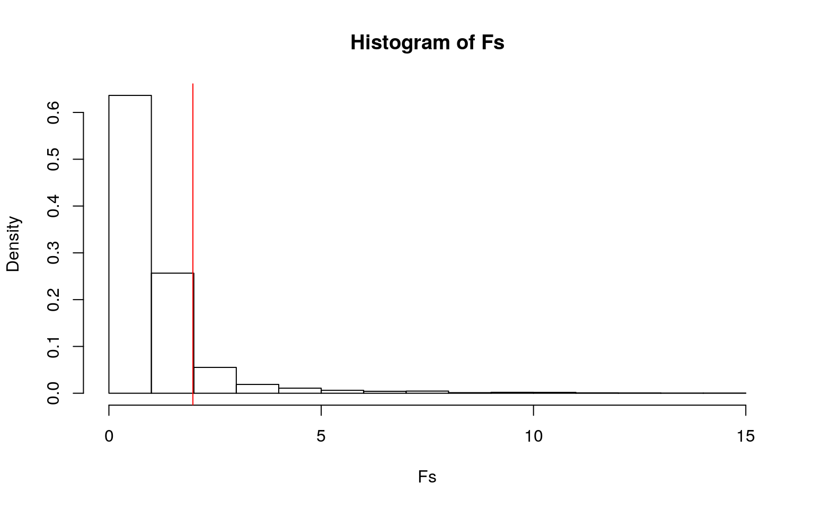
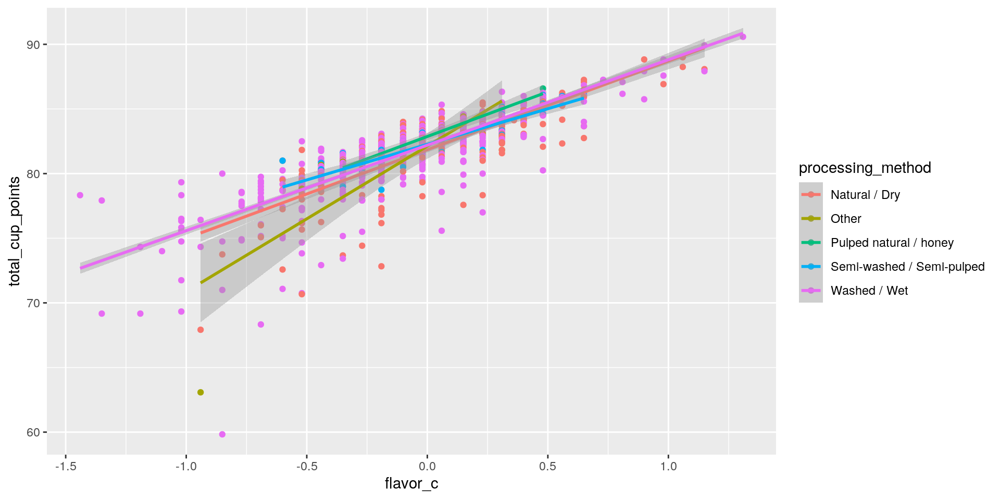
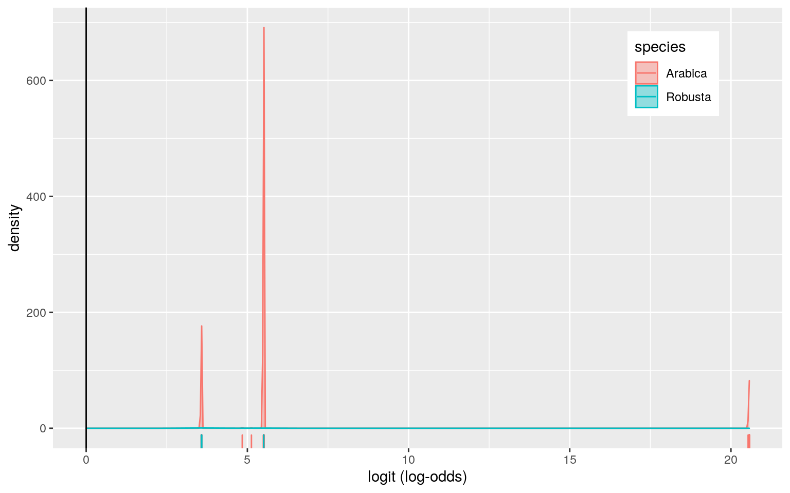
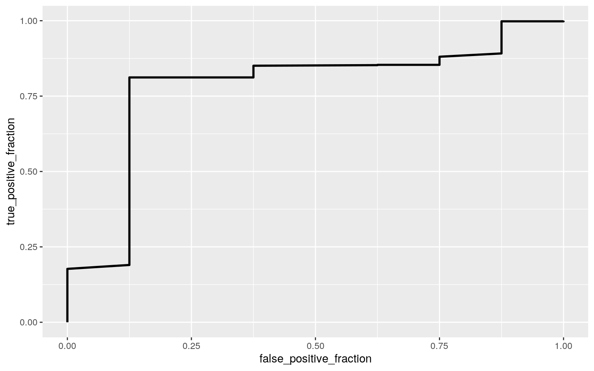

coffee_ratings <- readr::read_csv('https://raw.githubusercontent.com/rfordatascience/tidytuesday/master/data/2020/2020-07-07/coffee_ratings.csv')
coffee_ratings <- coffee_ratings %>% select(total_cup_points, species, country_of_origin, harvest_year, variety, processing_method, aroma, flavor, aftertaste, acidity, body, balance, uniformity, clean_cup, sweetness, color, altitude_mean_meters)The goal of my project is to conduct statistical tests on coffee bean ratings from around the world and to uncover any statistical significance contained within the variables of the coffee dataset by analyzing the relationships between these variables. The coffee dataset contains 1339 observations with many variables, but for my project I have chosen to study 17 variables that are the most useful and easily understood. The main variables I will be studying are the total cup points which is the overall rating (0-100 scale) of the coffee bean given by professionals. The species of the bean which come in two varieties Robusta and Arabica, the processing method of the bean which comes in a variety of different types ranging from washed/wet to natural/dry, the color of the beans which ranges from green to bluish-green, and the mean altitude the coffee is grown in. Finally, the numerical variables I am looking at characterize the flavor profile and depth of the coffee beans by rating these characteristics on a scale of 1-10 taking into consideration attributes such as aroma, flavor, acidity, body, balance, etc. I decided on this dataset because recently I have taken a huge interest into the world of coffee and wanted to see what kind of factors affect the flavors profiles of certain coffees. I expect that several factors such as the species of the bean and altitude play a large role in determining the characteristics of coffee, and I will determine the statistical significance of each of these factors through this project.
man1 <- manova(cbind(total_cup_points, aroma, flavor, aftertaste, acidity, body, balance)~processing_method, data=coffee_ratings)
summary(man1)## Df Pillai approx F num Df den Df Pr(>F)
## processing_method 4 0.080932 3.4251 28 4644 3.005e-09
***
## Residuals 1164
## ---
## Signif. codes: 0 '***' 0.001 '**' 0.01 '*' 0.05 '.' 0.1
' ' 1summary.aov(man1)## Response total_cup_points :
## Df Sum Sq Mean Sq F value Pr(>F)
## processing_method 4 57.9 14.4678 1.978 0.09561 .
## Residuals 1164 8513.8 7.3143
## ---
## Signif. codes: 0 '***' 0.001 '**' 0.01 '*' 0.05 '.' 0.1
' ' 1
##
## Response aroma :
## Df Sum Sq Mean Sq F value Pr(>F)
## processing_method 4 0.584 0.145878 1.5173 0.1948
## Residuals 1164 111.910 0.096143
##
## Response flavor :
## Df Sum Sq Mean Sq F value Pr(>F)
## processing_method 4 2.14 0.53501 4.8143 0.0007458 ***
## Residuals 1164 129.36 0.11113
## ---
## Signif. codes: 0 '***' 0.001 '**' 0.01 '*' 0.05 '.' 0.1
' ' 1
##
## Response aftertaste :
## Df Sum Sq Mean Sq F value Pr(>F)
## processing_method 4 2.151 0.53781 4.6172 0.001059 **
## Residuals 1164 135.582 0.11648
## ---
## Signif. codes: 0 '***' 0.001 '**' 0.01 '*' 0.05 '.' 0.1
' ' 1
##
## Response acidity :
## Df Sum Sq Mean Sq F value Pr(>F)
## processing_method 4 0.501 0.125195 1.2837 0.2744
## Residuals 1164 113.519 0.097525
##
## Response body :
## Df Sum Sq Mean Sq F value Pr(>F)
## processing_method 4 2.516 0.62898 8.3418 1.237e-06 ***
## Residuals 1164 87.767 0.07540
## ---
## Signif. codes: 0 '***' 0.001 '**' 0.01 '*' 0.05 '.' 0.1
' ' 1
##
## Response balance :
## Df Sum Sq Mean Sq F value Pr(>F)
## processing_method 4 2.338 0.58440 5.0626 0.0004786 ***
## Residuals 1164 134.366 0.11543
## ---
## Signif. codes: 0 '***' 0.001 '**' 0.01 '*' 0.05 '.' 0.1
' ' 1
##
## 170 observations deleted due to missingnesspairwise.t.test(coffee_ratings$flavor, coffee_ratings$processing_method,p.adj="none")##
## Pairwise comparisons using t tests with pooled SD
##
## data: coffee_ratings$flavor and
coffee_ratings$processing_method
##
## Natural / Dry Other Pulped natural / honey Semi-washed /
Semi-pulped
## Other 0.0521 - - -
## Pulped natural / honey 0.4644 0.5479 - -
## Semi-washed / Semi-pulped 0.8527 0.0719 0.4452 -
## Washed / Wet 0.0001 0.5418 0.7733 0.0270
##
## P value adjustment method: nonepairwise.t.test(coffee_ratings$aftertaste, coffee_ratings$processing_method,p.adj="none")##
## Pairwise comparisons using t tests with pooled SD
##
## data: coffee_ratings$aftertaste and
coffee_ratings$processing_method
##
## Natural / Dry Other Pulped natural / honey Semi-washed /
Semi-pulped
## Other 0.09028 - - -
## Pulped natural / honey 0.48296 0.10269 - -
## Semi-washed / Semi-pulped 0.92914 0.12749 0.54822 -
## Washed / Wet 0.00026 0.66067 0.09244 0.04718
##
## P value adjustment method: nonepairwise.t.test(coffee_ratings$body, coffee_ratings$processing_method,p.adj="none")##
## Pairwise comparisons using t tests with pooled SD
##
## data: coffee_ratings$body and
coffee_ratings$processing_method
##
## Natural / Dry Other Pulped natural / honey Semi-washed /
Semi-pulped
## Other 0.0021 - - -
## Pulped natural / honey 0.5980 0.0188 - -
## Semi-washed / Semi-pulped 0.2931 0.0433 0.3159 -
## Washed / Wet 2.8e-07 0.1818 0.0569 0.1216
##
## P value adjustment method: nonepairwise.t.test(coffee_ratings$balance, coffee_ratings$processing_method,p.adj="none")##
## Pairwise comparisons using t tests with pooled SD
##
## data: coffee_ratings$balance and
coffee_ratings$processing_method
##
## Natural / Dry Other Pulped natural / honey Semi-washed /
Semi-pulped
## Other 0.060 - - -
## Pulped natural / honey 0.491 0.550 - -
## Semi-washed / Semi-pulped 0.892 0.122 0.571 -
## Washed / Wet 3.5e-05 0.648 0.691 0.045
##
## P value adjustment method: nonealpha = 0.05/28
alpha## [1] 0.001785714library(rstatix)
group <- coffee_ratings$processing_method
DVs <- coffee_ratings %>% select(total_cup_points, aroma, flavor, aftertaste, acidity, body, balance)
#Test multivariate normality for each group (null: assumption met)
sapply(split(DVs,group), mshapiro_test)## Natural / Dry Other Pulped natural / honey Semi-washed /
Semi-pulped Washed / Wet
## statistic 0.8498619 0.3639152 0.6203804 0.7122777
0.5199039
## p.value 4.103599e-15 1.385442e-09 6.198931e-05
3.621687e-09 2.960365e-42#If any p<.05, stop (assumption violated). If not, test homogeneity of covariance matrices
#Box's M test (null: homogeneity of vcov mats assumption met)
box_m(DVs, group)## # A tibble: 1 x 4
## statistic p.value parameter method
## <dbl> <dbl> <dbl> <chr>
## 1 NA NA 112 Box's M-test for Homogeneity of Covariance
Matrices#Optionally View covariance matrices for each group
lapply(split(DVs,group), cov)## $`Natural / Dry`
## total_cup_points aroma flavor aftertaste acidity body
balance
## total_cup_points 8.0039294 0.59500572 0.74587010
0.70911451 0.60515794 0.44348537 0.69097265
## aroma 0.5950057 0.10449919 0.07862245 0.07303264
0.06669581 0.05081048 0.06668857
## flavor 0.7458701 0.07862245 0.10885726 0.09006846
0.07869101 0.05777123 0.07748562
## aftertaste 0.7091145 0.07303264 0.09006846 0.10866664
0.07824062 0.05622127 0.08329153
## acidity 0.6051579 0.06669581 0.07869101 0.07824062
0.10652073 0.05274404 0.07219071
## body 0.4434854 0.05081048 0.05777123 0.05622127
0.05274404 0.07302824 0.05475285
## balance 0.6909727 0.06668857 0.07748562 0.08329153
0.07219071 0.05475285 0.11686178
##
## $Other
## total_cup_points aroma flavor aftertaste acidity body
balance
## total_cup_points 15.9864215 0.40875969 0.949408
1.05562892 1.14470031 0.99890246 1.40157785
## aroma 0.4087597 0.04768246 0.049156 0.04742462
0.04926154 0.03644031 0.05507323
## flavor 0.9494080 0.04915600 0.084362 0.07898400
0.08931000 0.07495800 0.08830600
## aftertaste 1.0556289 0.04742462 0.078984 0.09680615
0.08651938 0.07919908 0.10665631
## acidity 1.1447003 0.04926154 0.089310 0.08651938
0.11318046 0.08430969 0.10506877
## body 0.9989025 0.03644031 0.074958 0.07919908 0.08430969
0.09160754 0.09839215
## balance 1.4015778 0.05507323 0.088306 0.10665631
0.10506877 0.09839215 0.19771462
##
## $`Pulped natural / honey`
## total_cup_points aroma flavor aftertaste acidity body
balance
## total_cup_points 2.8467874 0.36368462 0.37980330
0.43196429 0.30330714 0.39595549 0.44217363
## aroma 0.3636846 0.05303077 0.04973846 0.05316154
0.03931538 0.04643846 0.05431538
## flavor 0.3798033 0.04973846 0.05495165 0.05604176
0.03844396 0.05169890 0.05727143
## aftertaste 0.4319643 0.05316154 0.05604176 0.07532582
0.03979176 0.06054011 0.06928132
## acidity 0.3033071 0.03931538 0.03844396 0.03979176
0.06045549 0.03117198 0.04377912
## body 0.3959555 0.04643846 0.05169890 0.06054011
0.03117198 0.06814560 0.06087033
## balance 0.4421736 0.05431538 0.05727143 0.06928132
0.04377912 0.06087033 0.07581319
##
## $`Semi-washed / Semi-pulped`
## total_cup_points aroma flavor aftertaste acidity body
balance
## total_cup_points 3.1212452 0.36746753 0.44644909
0.40717961 0.33965481 0.28415675 0.39648338
## aroma 0.3674675 0.08412974 0.06024091 0.04294994
0.04027792 0.02547916 0.04121390
## flavor 0.4464491 0.06024091 0.08104455 0.05859682
0.05073818 0.03642136 0.05505545
## aftertaste 0.4071796 0.04294994 0.05859682 0.06875010
0.04014857 0.03290718 0.05037006
## acidity 0.3396548 0.04027792 0.05073818 0.04014857
0.06224883 0.03009506 0.03715844
## body 0.2841568 0.02547916 0.03642136 0.03290718
0.03009506 0.06383919 0.05697357
## balance 0.3964834 0.04121390 0.05505545 0.05037006
0.03715844 0.05697357 0.08185701
##
## $`Washed / Wet`
## total_cup_points aroma flavor aftertaste acidity body
balance
## total_cup_points 7.1848301 0.58897363 0.76448729
0.78925666 0.58433582 0.49819622 0.72070852
## aroma 0.5889736 0.09649330 0.07763562 0.07636830
0.05760208 0.04967741 0.06617349
## flavor 0.7644873 0.07763562 0.11560067 0.10383044
0.07920760 0.06492152 0.08609390
## aftertaste 0.7892567 0.07636830 0.10383044 0.12343279
0.07584837 0.06730075 0.09248942
## acidity 0.5843358 0.05760208 0.07920760 0.07584837
0.09717979 0.05404450 0.06914821
## body 0.4981962 0.04967741 0.06492152 0.06730075
0.05404450 0.07655010 0.06709417
## balance 0.7207085 0.06617349 0.08609390 0.09248942
0.06914821 0.06709417 0.11535837I conducted a one-way MANOVA test to determine the effect of the processing method of the coffee beans on the different bean characteristics, and significant differences were found among the different processing methods for at least one of the dependent variables, Pillai trace = 0.081, pseudo F(28,4644) = 3.425, p < 0.001. Univariate ANOVA tests were conducted on each of the characteristics, and using the Bonferroni correction for controlling the type I error rate. Only the univariate ANOVAs for flavor, aftertaste, body, and balance were significant, F(4,1164) = 4.814, p < 0.0001 for flavor, F(4,1164) = 4.617, p < 0.01 for aftertaste, F(4,1164) = 8.342, p < 0.0001 for body, F(4,1164) = 5.063, p < 0.0001 for balance. In order to properly perform the MANOVA testing, I had to compute 28 total hypothesis tests, and the probability of at least one type 1 error has occurred is 0.05 or 5%. For the sake of keeping my error rate at 0.05, I calculated a Bonferroni correction to adjust my significance level to 0.0018. Post hoc analysis was done through pairwise comparisons to determine which specific processing methods differed in flavor profiles. After using the Bonferroni corrected error rate, the only processing methods that were found to differ significantly from each other in terms of bean characteristics were washed/wet and natural/dry. After testing for multivariate normality for each group using the mshapiro test, I got p-values less than 0.05 for every group which means that I reject the null hypothesis that all population variances are equal across the groups. Because of this, the multivariate normality assumption for the MANOVA test is violated which may negatively impact our model and lead to some inaccuracies.
summary(aov(total_cup_points~processing_method,data=coffee_ratings))## Df Sum Sq Mean Sq F value Pr(>F)
## processing_method 4 58 14.468 1.978 0.0956 .
## Residuals 1164 8514 7.314
## ---
## Signif. codes: 0 '***' 0.001 '**' 0.01 '*' 0.05 '.' 0.1
' ' 1
## 170 observations deleted due to missingnesspairwise.t.test(coffee_ratings$total_cup_points, coffee_ratings$processing_method, p.adj = "none")##
## Pairwise comparisons using t tests with pooled SD
##
## data: coffee_ratings$total_cup_points and
coffee_ratings$processing_method
##
## Natural / Dry Other Pulped natural / honey Semi-washed /
Semi-pulped
## Other 0.083 - - -
## Pulped natural / honey 0.448 0.088 - -
## Semi-washed / Semi-pulped 0.330 0.035 0.829 -
## Washed / Wet 0.152 0.201 0.249 0.075
##
## P value adjustment method: noneobs_F<-1.978 #this is our observed F-statistic
Fs<-replicate(5000,{ #do everything in curly braces 5000 times and save the output
new<-coffee_ratings%>%mutate(total_cup_points=sample(total_cup_points))
#compute the F-statistic by hand
SSW<- new%>%group_by(processing_method)%>%summarize(SSW=sum((total_cup_points-mean(total_cup_points))^2))%>%
summarize(sum(SSW))%>%pull
SSB<- new%>%mutate(mean=mean(total_cup_points))%>%group_by(processing_method)%>%mutate(groupmean=mean(total_cup_points))%>%
summarize(SSB=sum((mean-groupmean)^2))%>%summarize(sum(SSB))%>%pull
(SSB/4)/(SSW/1164)
})
hist(Fs, prob=T); abline(v = obs_F, col="red",add=T)
mean(Fs>obs_F)## [1] 0.1096Null Hypothesis: The mean total cup points is the same for each of the processing methods. Alternative Hypothesis: At least one of the sample means for the processing methods is not equal to the others.
I got a p-value of 0.103 which means I fail to reject the null hypothesis and conclude that there is no significant difference in the mean total cup points between the different procesisng methods.
coffee_ratings$flavor_c <- coffee_ratings$flavor - mean(coffee_ratings$flavor, na.rm=T)
coffee_fit <- lm(total_cup_points ~ flavor_c*processing_method, data=coffee_ratings)
summary(coffee_fit)##
## Call:
## lm(formula = total_cup_points ~ flavor_c *
processing_method,
## data = coffee_ratings)
##
## Residuals:
## Min 1Q Median 3Q Max
## -16.7445 -0.3577 0.2012 0.7323 5.6572
##
## Coefficients:
## Estimate Std. Error t value Pr(>|t|)
## (Intercept) 81.84800 0.09556 856.512 < 2e-16 ***
## flavor_c 6.85182 0.28580 23.974 < 2e-16 ***
## processing_methodOther 0.27930 0.32123 0.869 0.38477
## processing_methodPulped natural / honey 1.02204 0.41547
2.460 0.01404 *
## processing_methodSemi-washed / Semi-pulped 0.41608
0.22857 1.820 0.06896 .
## processing_methodWashed / Wet 0.35056 0.10939 3.205
0.00139 **
## flavor_c:processing_methodOther 4.40216 1.07945 4.078
4.85e-05 ***
## flavor_c:processing_methodPulped natural / honey 0.05977
1.81124 0.033 0.97368
## flavor_c:processing_methodSemi-washed / Semi-pulped
-1.34313 0.77094 -1.742 0.08174 .
## flavor_c:processing_methodWashed / Wet -0.23864 0.32553
-0.733 0.46365
## ---
## Signif. codes: 0 '***' 0.001 '**' 0.01 '*' 0.05 '.' 0.1
' ' 1
##
## Residual standard error: 1.512 on 1159 degrees of
freedom
## (170 observations deleted due to missingness)
## Multiple R-squared: 0.691, Adjusted R-squared: 0.6886
## F-statistic: 288 on 9 and 1159 DF, p-value: < 2.2e-16new_coffee_ratings <- coffee_ratings %>% filter(!is.na(processing_method), !is.na(flavor_c), !is.na(total_cup_points))
ggplot(new_coffee_ratings, aes(flavor_c, total_cup_points, color=processing_method)) + geom_point() + geom_smooth(method="lm")
library(lmtest)
library(sandwich)
bptest(coffee_fit) #H0: homoskedastic##
## studentized Breusch-Pagan test
##
## data: coffee_fit
## BP = 73.34, df = 9, p-value = 3.358e-12coeftest(coffee_fit,vcov=vcovHC(coffee_fit))##
## t test of coefficients:
##
## Estimate Std. Error t value Pr(>|t|)
## (Intercept) 81.848001 0.122994 665.4650 < 2.2e-16 ***
## flavor_c 6.851818 0.464866 14.7394 < 2.2e-16 ***
## processing_methodOther 0.279300 0.377245 0.7404 0.459227
## processing_methodPulped natural / honey 1.022041
0.187935 5.4383 6.558e-08 ***
## processing_methodSemi-washed / Semi-pulped 0.416079
0.179491 2.3181 0.020617 *
## processing_methodWashed / Wet 0.350562 0.131342 2.6691
0.007712 **
## flavor_c:processing_methodOther 4.402159 5.907049 0.7452
0.456279
## flavor_c:processing_methodPulped natural / honey
0.059773 0.801460 0.0746 0.940562
## flavor_c:processing_methodSemi-washed / Semi-pulped
-1.343130 0.687688 -1.9531 0.051047 .
## flavor_c:processing_methodWashed / Wet -0.238644
0.539634 -0.4422 0.658403
## ---
## Signif. codes: 0 '***' 0.001 '**' 0.01 '*' 0.05 '.' 0.1
' ' 1The intercept is the mean amount of total cup points for a processing method of natural/dry with an average flavor rating. For every 1 unit rating increase in flavor, the predicted amount of total cup points for coffee beans with the natural/dry processing method goes up by 6.85 points. Coffee beans that went through the processing method of other with an average flavor rating are predicted to have 0.28 more total cup points than the natural/dry processing method with an average flavor rating. Coffee beans that went through the pulped natural/honey process with an average flavor rating are predicted to have 1.02 more total cup points than the natural/dry processing method with an average flavor rating. Coffee beans that went through the semi-washed/semi-pulped process with an average flavor rating are predicted to have 0.42 more total cup points than the natural/dry processing method with an average flavor rating. Coffee beans that went through the washed/wet process with an average flavor rating are predicted to have 0.35 more total cup points than the natural/dry processing method with an average flavor rating. The slope of flavor on the total cup points for the other processing method is 4.40 greater than the natural/dry process. The slope of flavor on the total cup points for the pulped natural/honey processing method is 0.06 greater than the natural/dry process. The slope of flavor on the total cup points for the semi-washed/semi-pulped processing method is 1.34 less than the natural/dry process. The slope of flavor on the total cup points for the washed/wet processing method is 0.24 less than the natural/dry process.
After getting a p-value < 0.0001 from the Breuch-Pagan test, I rejected my null hypothesis for homoskedasticity, and redid my regression using heteroskedasticity robust standard errors. With the correction, the coefficients of mean centered flavor, the pulped natural/honey process, the semi-washed/semi-pulped process, and the washed/wet process are significant. The only significant result that became no longer significant due to the correction was the interaction between mean centered flavor and the other processing method, and using the correction the p-value for the pulped natural/ honey process was notably decreased. Also, for all of my significant results from robust standard errors, the t-statistics got larger except for the t-statistic for the washed/wet process, and the standard errors got larger except for the standard errors for the pulped natural/honey process. The proportion of the variation in the outcome that my model explains can be determined from the adjusted R-squared value of 0.689, and it means that 68.9% of variability in total cup points is explained.
resids<-coffee_fit$residuals
fitted<-coffee_fit$fitted.values
resid_resamp<-replicate(5000,{
new_resids<-sample(resids,replace=TRUE)
new_coffee_ratings$new_total_cup_points<-fitted+new_resids
fit<-lm(new_total_cup_points~flavor_c*processing_method,data=new_coffee_ratings)
coef(fit)
})
resid_resamp%>%t%>%as.data.frame%>%summarize_all(sd)## (Intercept) flavor_c processing_methodOther
processing_methodPulped natural / honey
## 1 0.09487521 0.2853441 0.3191865 0.4139647
## processing_methodSemi-washed / Semi-pulped
processing_methodWashed / Wet
## 1 0.2260405 0.1102516
## flavor_c:processing_methodOther
flavor_c:processing_methodPulped natural / honey
## 1 1.053926 1.845534
## flavor_c:processing_methodSemi-washed / Semi-pulped
flavor_c:processing_methodWashed / Wet
## 1 0.7761734 0.3262547# 95% CI
resid_resamp%>%t%>%as.data.frame%>%pivot_longer(1:10)%>%group_by(name)%>%
summarize(lower=quantile(value,.025), upper=quantile(value,.975))## # A tibble: 10 x 3
## name lower upper
## <chr> <dbl> <dbl>
## 1 (Intercept) 81.7 82.0
## 2 flavor_c 6.27 7.40
## 3 flavor_c:processing_methodOther 2.45 6.55
## 4 flavor_c:processing_methodPulped natural / honey -3.69
3.73
## 5 flavor_c:processing_methodSemi-washed / Semi-pulped
-2.86 0.220
## 6 flavor_c:processing_methodWashed / Wet -0.861 0.411
## 7 processing_methodOther -0.417 0.835
## 8 processing_methodPulped natural / honey 0.0977 1.72
## 9 processing_methodSemi-washed / Semi-pulped -0.0558
0.834
## 10 processing_methodWashed / Wet 0.135 0.574The standard errors from the bootstrap standard error of residuals are smaller than the robust standard errors for the data except for the interactions between flavor and the semi-washed/semi-pulped process and the interaction between flavor and the pulped natural/honey process. The bootstrapped standard errors for residuals is also slightly smaller than the original standard errors. The only standard errors from the bootstrapped standard errors that are greater than the original standard errors are the the values from the semi-washed/semi-pulped process, the washed/wet process, and the interaction between flavor and the semi-washed/semi-pulped process. Compared to the p-values from the original standard errors, the p-values from the robust standard errors of my significant results all got lower except for the washed/wet process.
coffee_ratings_2 <- coffee_ratings %>% select(species, altitude_mean_meters, processing_method) %>% na.omit()
dummy_bean <- data.frame(dummy_bean=ifelse(coffee_ratings_2$species=="Arabica",1, ifelse(coffee_ratings_2$species!="Arabica",0, NA)))
coffee_ratings_2 <- cbind(coffee_ratings_2,dummy_bean)
coffee_fit2 <-glm(dummy_bean ~ altitude_mean_meters + processing_method, data=coffee_ratings_2, family='binomial')
summary(coffee_fit2)##
## Call:
## glm(formula = dummy_bean ~ altitude_mean_meters +
processing_method,
## family = "binomial", data = coffee_ratings_2)
##
## Deviance Residuals:
## Min 1Q Median 3Q Max
## -3.3208 0.0899 0.0899 0.0900 0.2360
##
## Coefficients:
## Estimate Std. Error z value Pr(>|z|)
## (Intercept) 3.582e+00 4.558e-01 7.858 3.9e-15 ***
## altitude_mean_meters -3.520e-06 4.016e-05 -0.088 0.9302
## processing_methodOther 1.699e+01 3.546e+03 0.005 0.9962
## processing_methodPulped natural / honey 1.699e+01
5.607e+03 0.003 0.9976
## processing_methodSemi-washed / Semi-pulped 1.699e+01
2.435e+03 0.007 0.9944
## processing_methodWashed / Wet 1.931e+00 7.372e-01 2.620
0.0088 **
## ---
## Signif. codes: 0 '***' 0.001 '**' 0.01 '*' 0.05 '.' 0.1
' ' 1
##
## (Dispersion parameter for binomial family taken to be 1)
##
## Null deviance: 93.396 on 1012 degrees of freedom
## Residual deviance: 84.956 on 1007 degrees of freedom
## AIC: 96.956
##
## Number of Fisher Scoring iterations: 19probs <- predict(coffee_fit2, type="response")
table(predict=as.numeric(probs>.5),truth=coffee_ratings_2$dummy_bean)%>%addmargins## truth
## predict 0 1 Sum
## 1 8 1005 1013
## Sum 8 1005 1013## GIVE IT PREDICTED PROBS AND TRUTH LABELS (0/1), RETURNS VARIOUS DIAGNOSTICS
class_diag <- function(probs,truth){
#CONFUSION MATRIX: CALCULATE ACCURACY, TPR, TNR, PPV
if(is.character(truth)==TRUE) truth<-as.factor(truth)
if(is.numeric(truth)==FALSE & is.logical(truth)==FALSE) truth<-as.numeric(truth)-1
tab<-table(factor(probs>.5,levels=c("FALSE","TRUE")),factor(truth, levels=c(0,1)))
acc=sum(diag(tab))/sum(tab)
sens=tab[2,2]/colSums(tab)[2]
spec=tab[1,1]/colSums(tab)[1]
ppv=tab[2,2]/rowSums(tab)[2]
f1=2*(sens*ppv)/(sens+ppv)
#CALCULATE EXACT AUC
ord<-order(probs, decreasing=TRUE)
probs <- probs[ord]; truth <- truth[ord]
TPR=cumsum(truth)/max(1,sum(truth))
FPR=cumsum(!truth)/max(1,sum(!truth))
dup<-c(probs[-1]>=probs[-length(probs)], FALSE)
TPR<-c(0,TPR[!dup],1); FPR<-c(0,FPR[!dup],1)
n <- length(TPR)
auc<- sum( ((TPR[-1]+TPR[-n])/2) * (FPR[-1]-FPR[-n]) )
data.frame(acc,sens,spec,ppv,f1,auc)
}
class_diag(probs, coffee_ratings_2$dummy_bean)## acc sens spec ppv f1 auc
## 1 0.9921027 1 0 0.9921027 0.9960357 0.7810945coffee_ratings_2$logit <- predict(coffee_fit2, type="link")
coffee_ratings_2%>%ggplot()+geom_density(aes(logit,color=species,fill=species), alpha=.4)+
theme(legend.position=c(.85,.85))+geom_vline(xintercept=0)+xlab("logit (log-odds)")+
geom_rug(aes(logit,color=species))
library(plotROC)
ROCplot <- ggplot(coffee_ratings_2) + geom_roc(aes(d=dummy_bean,m=probs), n.cuts=0)
ROCplot
calc_auc(ROCplot)## PANEL group AUC
## 1 1 -1 0.7810945The coefficient for the intercept means that the odds of the bean being Arabica for the natural/dry process when the mean altitude is zero is 3.58. The coefficient for mean altitude means that when you are controlling for the processing method, for every 1 meter increase in altitude, the odds of the bean being Arabica decreases by a factor of 3.52e-6. The coefficient for the other processing method means that controlling for altitude, the odds of the bean being Arabica for the other process is 1.70e1 times the odds of the bean being Arabica for the natural/dry process. The coefficient for the pulped natural/honey processing method means that controlling for altitude, the odds of the bean being Arabica for the pulped natural/honey process is 1.70e1 times the odds of the bean being Arabica for the natural/dry process. The coefficient for the semi-washed/semi-pulped processing method means that controlling for altitude, the odds of the bean being Arabica for the semi-washed/semi-pulped process is 1.70e1 times the odds of the bean being Arabica for the natural/dry process. The coefficient for the washed/wet processing method means that controlling for altitude, the odds of the bean being Arabica for the washed/wet process is 1.93 times the odds of the bean being Arabica for the natural/dry process.
The model is performing fairly with an AUC value of 0.781, and the model has a sensitivity of 1.0, a specificity of 0, and a precision of 0.992. I believe that the reason my class diagnostics as well as my confusion matrix are reporting strange values is because my dataset does not contain many observations of the Robusta species with the vast majority of the dataset containing observations for the Arabica bean, and this problem was only exacerbated when removing the N/A values from the data. These factors resulted in a specifity of 0 because there were no true negatives meaning there was a 0 in the numerator, and it resulted in a sensitivity of 1.0 because the amount of true positives was equal to the sum. The model is able to rpedict true values better than false values because the sensitivity is greater than the specificity. Because my ROC plot had a calculated AUC of 0.781 indicates that this AUC value can be evaluated as fair and this result can also be observed when looking at the ROC plot.
coffee_ratings_3 <- coffee_ratings %>% select(-country_of_origin, -harvest_year, -variety, -flavor_c) %>% na.omit()
dummy_bean <- data.frame(dummy_bean=ifelse(coffee_ratings_3$species=="Arabica",1, ifelse(coffee_ratings_3$species!="Arabica",0, NA)))
coffee_ratings_3 <- cbind(coffee_ratings_3, dummy_bean)
coffee_ratings_3 <- coffee_ratings_3 %>% select(-species)
coffee_fit3 <- glm(dummy_bean~., data=coffee_ratings_3, family="binomial")
probs2 <- predict(coffee_fit3, type='response')
class_diag(probs2, coffee_ratings_3$dummy_bean)## acc sens spec ppv f1 auc
## 1 1 1 1 1 1 1table(prediction=as.numeric(probs2>0.5), truth=coffee_ratings_3$dummy_bean) %>% addmargins## truth
## prediction 0 1 Sum
## 0 6 0 6
## 1 0 929 929
## Sum 6 929 935# CV
k=10
data1<-coffee_ratings_3[sample(nrow(coffee_ratings_3)),] #put dataset in random order
folds<-cut(seq(1:nrow(coffee_ratings_3)),breaks=k,labels=F) #create folds
diags<-NULL
for(i in 1:k){ # FOR EACH OF 10 FOLDS
train<-data1[folds!=i,] # CREATE TRAINING SET
test<-data1[folds==i,] # CREATE TESTING SET
truth<-test$dummy_bean
fit <- glm(dummy_bean~., data=train, family='binomial')
fit$xlevels[["variety"]] <- union(fit$xlevels[["variety"]], levels(as.factor(test$variety)))
fit$xlevels[["harvest_year"]] <- union(fit$xlevels[["harvest_year"]], levels(as.factor(test$harvest_year)))
prob <- predict(fit, newdata=test, type='response')
diags<-rbind(diags,class_diag(prob,truth)) #CV DIAGNOSTICS FOR EACH FOLD
}
avg_diagnostics <- summarize_all(diags,mean) #AVERAGE THE DIAGNOSTICS ACROSS THE 10 FOLDS
avg_diagnostics## acc sens spec ppv f1 auc
## 1 0.9892816 0.9935365 NaN 0.9956755 0.9945827 0.9206639# Lasso
library(glmnet)
coffee_preds <-model.matrix(coffee_fit3)[,-1]
coffee_resp <- as.matrix(coffee_ratings_3$dummy_bean)
cv <- cv.glmnet(coffee_preds, coffee_resp, family='binomial')
lasso_fit <-glmnet(coffee_preds,coffee_resp,family="binomial",lambda=cv$lambda.1se)
coef(lasso_fit)## 19 x 1 sparse Matrix of class "dgCMatrix"
## s0
## (Intercept) -79036.76
## total_cup_points .
## processing_methodOther .
## processing_methodPulped natural / honey .
## processing_methodSemi-washed / Semi-pulped .
## processing_methodWashed / Wet .
## aroma .
## flavor .
## aftertaste .
## acidity .
## body .
## balance .
## uniformity .
## clean_cup .
## sweetness 7974.13
## colorBluish-Green .
## colorGreen .
## colorNone .
## altitude_mean_meters .prob2 <- predict(lasso_fit, coffee_preds, type="response")
class_diag(prob2, coffee_ratings_3$dummy_bean)## acc sens spec ppv f1 auc
## 1 0.9529412 0.9526372 1 1 0.9757442 0.9763186table(prediction=as.numeric(prob2>0.5), truth=coffee_ratings_3$dummy_bean) %>% addmargins## truth
## prediction 0 1 Sum
## 0 6 44 50
## 1 0 885 885
## Sum 6 929 935# CV Lasso
k=10
data1<-coffee_ratings_3[sample(nrow(coffee_ratings_3)),] #put dataset in random order
folds<-cut(seq(1:nrow(coffee_ratings_3)),breaks=k,labels=F) #create folds
diags<-NULL
for(i in 1:k){ # FOR EACH OF 10 FOLDS
train<-data1[folds!=i,] # CREATE TRAINING SET
test<-data1[folds==i,] # CREATE TESTING SET
truth<-test$dummy_bean
fit <- glm(dummy_bean~total_cup_points, data=train, family='binomial')
fit$xlevels[["variety"]] <- union(fit$xlevels[["variety"]], levels(as.factor(test$variety)))
fit$xlevels[["harvest_year"]] <- union(fit$xlevels[["harvest_year"]], levels(as.factor(test$harvest_year)))
prob <- predict(fit, newdata=test, type='response')
diags<-rbind(diags,class_diag(prob,truth)) #CV DIAGNOSTICS FOR EACH FOLD
}
summarize_all(diags,mean)## acc sens spec ppv f1 auc
## 1 0.9935941 1 NaN 0.9935941 0.9967741 0.8522703In order to perform the logistic regression predicting the binary response, I had to remove the country of origin, harvest year, and variety variables because they contain a large amount of groups with several of those groups only containing one observation.
The model has an AUC value of 1.0, and the model has a sensitivity of 1.0, a specificity of 1.0, and a precision of 1.0. Similarly to part 5, my model and confusion matrix are reporting peculiar values because of the lack of observations for robusta beans in the dataset and by removing the NAs leads to non realistic predictions and results from the class diagnostics and confusion matrix. All of my classification diagnostics are because my model perfectly predicts my response leading to no false positives or false negatives. My 10 fold CV had almost the same out of sample results as my original model with an AUC value of 1.0, and the model has a sensitivity of 1.0, a specificity of NaN, and a precision of 1.0. The only differing result was a specificity of NaN, and this result is because calculating the true negative rate led to a division by zero hence the not a number result.
Because of my dataset, there were no variables that were retained due to their being no variables that had a non-zero value after doing the lasso fit. In order to carry on with my 10-fold CV, I chose the total cup points variable as my retianed variable because it was the only rsult from the lasso fit that returned a value albeit 0. The 10-fold CV on the lassoed variable resulted in a model with an AUC of 0.830, an acc of 0.994, a sens of 1.0, a spec of NaN, and a ppv 0.994. The specificity of NaN is the result of a division by zero when calculating the true negative rate. Compared to the original logistic regression and the previous 10-fold CV, the out of sample AUC performs worse with a value of 0.830, but it can still be classified as good. The lower accuracy means that the proportion of correctly classified beans is lower, and the lower precision means that the model was not as good at identifying robusta beans.